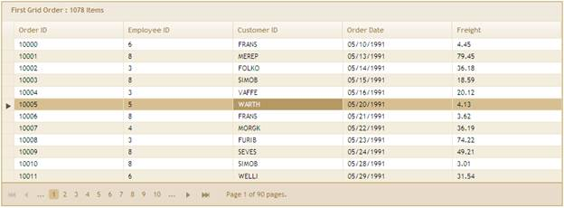
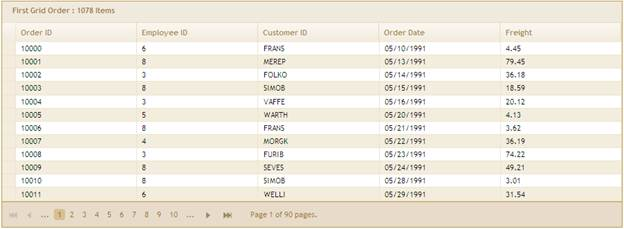

To enable the ToggleSelection feature you need to perform the following.
1. Create a model in the application (Refer to Getting Started>Adding a Model to the Application).
2. Create a strongly typed view (Refer to How to>Strongly Typed View).
3. In the view you can use its Model property in Datasource() to bind the data source.
|
View [ASPX]
<%=Html.Syncfusion().Grid<Order>("Grid1") .Datasource((IEnumerable<Order>)ViewData["ToggleGrid"]) .Caption("Orders") .Column(column => { column.Add(p => p.OrderID).HeaderText("Order ID"); column.Add(p => p.EmployeeID).HeaderText("Employee ID"); column.Add(p => p.CustomerID).HeaderText("Customer ID"); column.Add(p => p.OrderDate).HeaderText("Order Date").Format("{OrderDate:MM/dd/yyyy}"); column.Add(p => p.Freight).HeaderText("Freight");
}) .EnablePaging() .AutoFormat(Skins.Sandune) .RowsSelectionMode(RowsSelectionMode.Toggle) %> |
|
View [cshtml]
@{ Html.Syncfusion().Grid<Order>("Grid1") .Datasource((IEnumerable<Order>)ViewData["ToggleGrid"]) .Caption("Orders") .Column(column => { column.Add(p => p.OrderID).HeaderText("Order ID"); column.Add(p => p.EmployeeID).HeaderText("Employee ID"); column.Add(p => p.CustomerID).HeaderText("Customer ID"); column.Add(p => p.OrderDate).HeaderText("Order Date").Format("{OrderDate:MM/dd/yyyy}"); column.Add(p => p.Freight).HeaderText("Freight");
}) .EnablePaging() .AutoFormat(Skins.Sandune) .RowsSelectionMode(RowsSelectionMode.Toggle) .Render(); } |
4. Set the data source in the action and render the view.
|
[C#]
/// <summary> /// Used for rendering the grid initially. /// </summary> /// <returns>View page; it displays the grid.</returns> public ActionResult Index() {
ViewData["ToggleGrid"] = new NorthwindDataContext().Orders.ToList(); return View(); } |
5. Run the application and select any row in the grid. The grid will appear as shown below.

Figure 234: Grid with Row Selected
If you click on the selected row, the selected row will be unselected as shown in the following screenshot.

Figure 235: Grid with Row Unselected